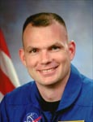

Lyndon B. Johnson Space Center
Houston, Texas 77058
|
National Aeronautics
and Space Administration Lyndon B. Johnson Space Center Houston, Texas 77058 |
 |
Biographical Data |
||
Dominic A. Antonelli (Commander, USN)
NASA Astronaut
PERSONAL DATA: Born in Detroit, Michigan. Raised in
Indiana and North Carolina. Married with two children. Interests include
snowboarding and NASCAR.
EDUCATION: Graduated from Douglas Byrd High School, Fayetteville, North Carolina; B.S., Aeronautics & Astronautics, Massachusetts Institute of Technology; M.S., Aeronautics & Astronautics, University of Washington.
SPECIAL HONORS: Navy Meritorious Service Medal, Navy Commendation Medal, NASA Exceptional Achievement Medal, NASA Return-to-Flight Award, and various service awards.
EXPERIENCE: Antonelli served as a fleet Naval Aviator and Landing Signal Officer aboard the aircraft carrier USS Nimitz with the Blue Diamonds, Strike Fighter Squadron VFA-146, flying F/A-18C Hornets in support of Operation Southern Watch.
Antonelli has accumulated over 3,200 hours in 41 different kinds of aircraft and has completed 273 carrier arrested landings. He is a Distinguished Graduate of the U.S. Air Force Test Pilot School (Navy Exchange Pilot).
NASA EXPERIENCE: Selected as a pilot by NASA in 2000. He completed 18 months of training and evaluation as an Astronaut Candidate. Antonelli initially served in various technical assignments in support of the Astronaut Office. A veteran of two space flights, Antonelli has logged a total of 24 days, 3 hours, 57 minutes and 35 seconds in space.
SPACE FLIGHT EXPERIENCE: Antonelli flew his first mission in space as the pilot of STS-119 aboard Space Shuttle Discovery in March 2009. The flight delivered the S6 Integrated Truss Segment and the final pair of power-generating solar array wings to the International Space Station.
Antonelli also served as pilot on STS-132 Atlantis (May 14-26, 2010) the 32nd Shuttle flight to the International Space Station. STS-132 delivered an Integrated Cargo Carrier and a Russian-build Mini Research Module to the Station. The STS-132 mission was completed in 186 orbits, traveling 4,879,978 miles in 11 days, 18 hours, 28 minutes and 2 seconds.
MAY 2012